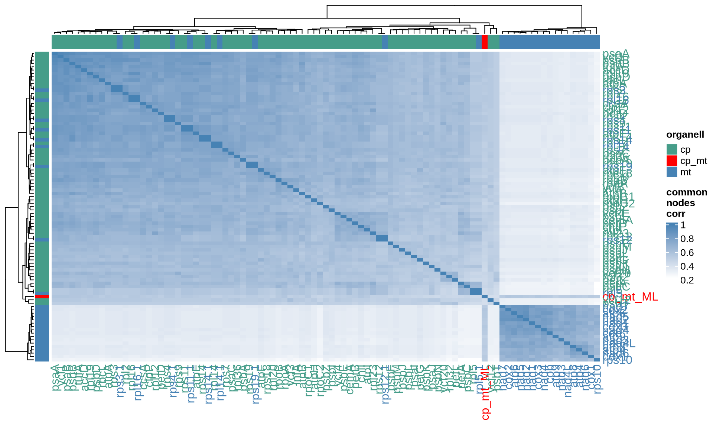
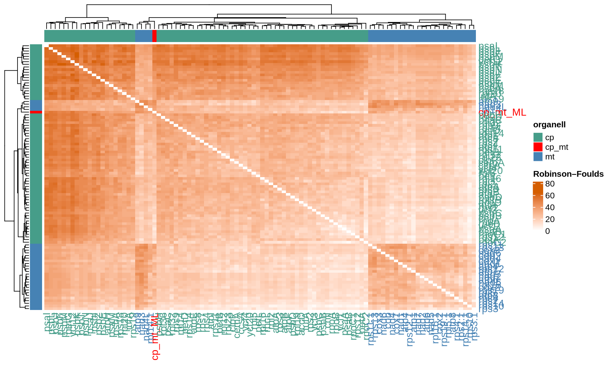
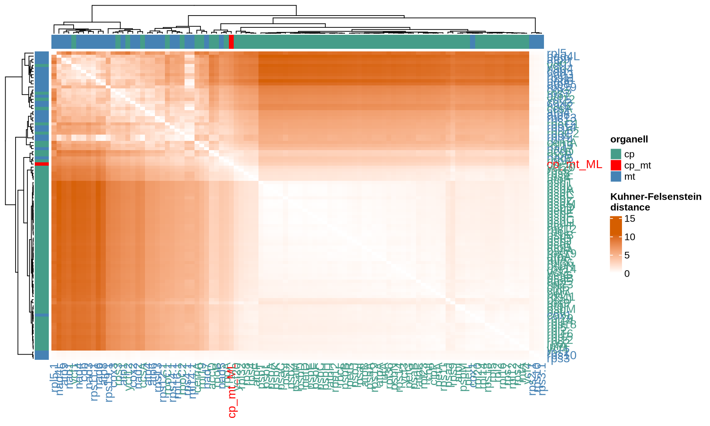
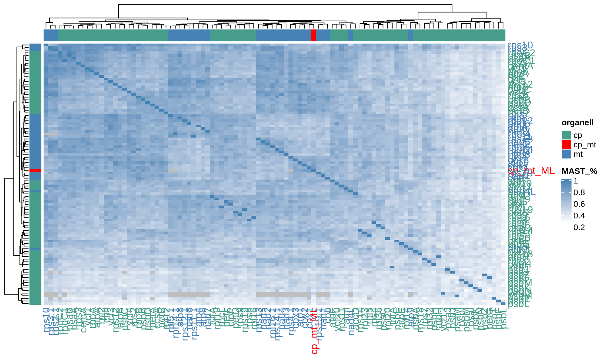

3 Gene markers selection
3.1 On this page
Biological insights and take-home messages are at the bottom of the page at Lesson Learnt: Section 3.4.
- Here we focus on samples from Kidney Cancers patients and their overall relationships.
- We then explore the association between each Kidney Cancer subtype and the major clinical covariates (e.g.: sex, disease status, cancer stage, clinical outcome).
3.2 Organellar gene selection
select genes based on their distance to the reconstructed CP+MT phylogenetic three
we select only 10 genes (6 cp and 4 mt) because doing the combination with all the 99 genes wilñl take forever
3.2.1 gene distances to species three
We take cp+mt ML tree as the real species tree for Ulva. Let’s now calculate the distance between each gene-tree and the species tree that we have reconstructed. Then, we can chose the top 5-10 genes that are closer to the reconstructed species tree to see what is their minimal combination able to reconstruct the gene tree.
# get cp ML gene trees
cp_ML_genes = list()
filenames = list.files("./03_cp_singleGene_ML/", pattern = "*.contree", full.names = TRUE)
cp_ML_genes = lapply(filenames, ape::read.tree)
names(cp_ML_genes) = strigr::str_remove_all(filenames, "./03_cp_singleGene_ML//")
names(cp_ML_genes) = strigr::str_remove_all(filenames, ".aln.contree")
cp_ML_genes[["cp_mt_ML"]] = phylogenetic_trees[["cp_mt_ML"]][["tree"]]
# get mt ML gene trees
mt_ML_genes = list()
filenames = list.files("./03_mt_singleGene_ML/", pattern = "*.contree", full.names = TRUE)
mt_ML_genes = lapply(filenames, ape::read.tree)
names(mt_ML_genes) = strigr::str_remove_all(filenames, "./03_mt_singleGene_ML//")
names(mt_ML_genes) = strigr::str_remove_all(filenames, ".aln.contree")
mt_ML_genes[["cp_mt_ML"]] = phylogenetic_trees[["cp_mt_ML"]][["tree"]]
# create distance lists
genes_sets = list("cp_mt_ML" = c(cp_ML_genes, mt_ML_genes[which(names(mt_ML_genes) != "cp_mt_ML")]))
empty_matrix = matrix(nrow = length(genes_sets[["cp_mt_ML"]]), ncol = length(genes_sets[["cp_mt_ML"]]))
colnames(empty_matrix) = names(genes_sets[["cp_mt_ML"]])
rownames(empty_matrix) = names(genes_sets[["cp_mt_ML"]])
cp_mt_genes_distances = list(
"common_nodes_corr" = empty_matrix,
"RF" = empty_matrix,
"KF" = empty_matrix,
"MAST_%" = empty_matrix
)
# populate distances lists
distance_sets = list("cp_mt_genes_distances" = cp_mt_genes_distances)
# get pairwise distances
for(j in 1:length(distance_sets)){
for(i in 1:length(genes_sets[[j]])){
for(k in 1:length(genes_sets[[j]])){
# error handling
# MAST call errors for very unresulved trees (e.g.: psaM)
# Error in root.phylo(x, bipart_x, resolve.root = TRUE) :
# the specified outgroup is not monophyletic
# catch error and move forward
skip_to_next = FALSE
# get tree
tree1_tmp = genes_sets[[j]][[i]]
tree2_tmp = genes_sets[[j]][[k]]
# list of common species
species_list = tree1_tmp$tip.label[which(tree1_tmp$tip.label %in% tree2_tmp$tip.label)]
# get overlapping species
tree1 = ape::keep.tip(tree1_tmp, species_list)
tree2 = ape::keep.tip(tree2_tmp, species_list)
# get distances
distances = phangorn::treedist(tree1, tree2)
distance_sets[[j]][["RF"]][i, k] = distances[[1]]
distance_sets[[j]][["KF"]][i, k] = distances[[2]]
#dist_DB_pairwise[["path_diff"]][i, k] = distances[[3]]
distance_sets[[j]][["MAST_%"]][i, k] = tryCatch(
length(phangorn::mast(tree1, tree2, tree = FALSE)) / length(species_list),
error = function(e) { skip_to_next <<- TRUE }
)
# error handling
if(skip_to_next){distance_sets[[j]][["MAST_%"]][i, k] = NA}
}
}
}
### get pairwise common_nodes_corr distances
# create CPU cluster
cl = parallel::makeCluster(8, type = "SOCK")
registerDoSNOW(cl)
# get chronos in parallel
chronos_list = foreach(k = 1:length(genes_sets[["cp_mt_ML"]]), .combine = "c") %dopar% {
library("ape")
# get tree
tryCatch(chronos(genes_sets[["cp_mt_ML"]][[k]]), error = function(e) { NA })
}
parallel::stopCluster(cl)
names(chronos_list) = names(genes_sets[["cp_mt_ML"]])
# get pairwise common_nodes_corr distances
for(j in 1:length(distance_sets)){
for(i in 1:length(genes_sets[[j]])){
for(k in 1:length(genes_sets[[j]])){
# get trees
tree1_tmp = chronos_list[[names(genes_sets[[j]])[i]]]
tree2_tmp = chronos_list[[names(genes_sets[[j]])[k]]]
# check trees and get distance
if(all(!is.na(tree1_tmp)) & all(!is.na(tree2_tmp))){
distance_sets[[j]][["common_nodes_corr"]][i, k] = cor.dendlist(
dendlist(as.dendrogram(tree1_tmp), as.dendrogram(tree2_tmp)),
method = "common_nodes")[2]
} else {
distance_sets[[j]][["common_nodes_corr"]][i, k] = NA
}
}
}
}
# rename matrices for cp/mt overlapping rpl/rps genes (for plotting reasons)
for(i in 1:length(distance_sets[["cp_mt_genes_distances"]])){
rownames(distance_sets[["cp_mt_genes_distances"]][[i]]) = c(
"accD", "atpA", "atpB", "atpE", "atpF", "atpH", "atpI", "ccsA", "cemA", "chlI", "clpP",
"infA", "petA", "petB", "petD", "petG", "petL", "psaA", "psaB", "psaC", "psaI", "psaJ",
"psaM", "psbA", "psbB", "psbC", "psbD", "psbE", "psbF", "psbH", "psbI", "psbJ", "psbK",
"psbL", "psbM", "psbN", "psbT", "psbZ", "rbcL", "rpl12", "rpl14", "rpl16", "rpl19", "rpl2",
"rpl20", "rpl23", "rpl32", "rpl36", "rpl5", "rpoA", "rpoB", "rpoC1", "rpoC2", "rps11",
"rps12", "rps14", "rps18", "rps19", "rps2", "rps3", "rps4", "rps7", "rps8", "rps9",
"tufA", "ycf1", "ycf12", "ycf20", "ycf3", "ycf4", "cp_mt_ML", "atp1", "atp4", "atp6",
"atp8", "atp9", "cob", "cox1", "cox2", "cox3", "nad1", "nad2", "nad3", "nad4", "nad4L",
"nad5", "nad6", "nad7", "rpl14 ", "rpl16 ", "rpl5 ", "rps10", "rps11 ", "rps12 ", "rps13",
"rps14 ", "rps19 ", "rps2 ", "rps3 ", "rps4 "
)
colnames(distance_sets[["cp_mt_genes_distances"]][[i]]) = c(
"accD", "atpA", "atpB", "atpE", "atpF", "atpH", "atpI", "ccsA", "cemA", "chlI", "clpP",
"infA", "petA", "petB", "petD", "petG", "petL", "psaA", "psaB", "psaC", "psaI", "psaJ",
"psaM", "psbA", "psbB", "psbC", "psbD", "psbE", "psbF", "psbH", "psbI", "psbJ", "psbK",
"psbL", "psbM", "psbN", "psbT", "psbZ", "rbcL", "rpl12", "rpl14", "rpl16", "rpl19", "rpl2",
"rpl20", "rpl23", "rpl32", "rpl36", "rpl5", "rpoA", "rpoB", "rpoC1", "rpoC2", "rps11",
"rps12", "rps14", "rps18", "rps19", "rps2", "rps3", "rps4", "rps7", "rps8", "rps9",
"tufA", "ycf1", "ycf12", "ycf20", "ycf3", "ycf4", "cp_mt_ML", "atp1", "atp4", "atp6",
"atp8", "atp9", "cob", "cox1", "cox2", "cox3", "nad1", "nad2", "nad3", "nad4", "nad4L",
"nad5", "nad6", "nad7", "rpl14 ", "rpl16 ", "rpl5 ", "rps10", "rps11 ", "rps12 ", "rps13",
"rps14 ", "rps19 ", "rps2 ", "rps3 ", "rps4 "
)
}Let’s now plot the generated distances!
#!/usr/bin/env R
# prepare gene lists
cp_genes_list = c(
"accD", "atpA", "atpB", "atpE", "atpF", "atpH", "atpI", "ccsA", "cemA", "chlI", "clpP",
"infA", "petA", "petB", "petD", "petG", "petL", "psaA", "psaB", "psaC", "psaI", "psaJ",
"psaM", "psbA", "psbB", "psbC", "psbD", "psbE", "psbF", "psbH", "psbI", "psbJ", "psbK",
"psbL", "psbM", "psbN", "psbT", "psbZ", "rbcL", "rpl12", "rpl14", "rpl16", "rpl19", "rpl2",
"rpl20", "rpl23", "rpl32", "rpl36", "rpl5", "rpoA", "rpoB", "rpoC1", "rpoC2", "rps11",
"rps12", "rps14", "rps18", "rps19", "rps2", "rps3", "rps4", "rps7", "rps8", "rps9",
"tufA", "ycf1", "ycf12", "ycf20", "ycf3", "ycf4"
)
mt_genes_list = c(
"atp1", "atp4", "atp6", "atp8", "atp9", "cob", "cox1", "cox2", "cox3", "nad1", "nad2",
"nad3", "nad4", "nad4L", "nad5", "nad6", "nad7", "rpl14 ", "rpl16 ", "rpl5 ", "rps10",
"rps11 ", "rps12 ", "rps13", "rps14 ", "rps19 ", "rps2 ", "rps3 ", "rps4 "
)
# remove possible rows/columns with only NAs
tmp_matrix = distance_sets[["cp_mt_genes_distances"]][["common_nodes_corr"]]
tmp_matrix = tmp_matrix[, colSums(is.na(tmp_matrix)) < nrow(tmp_matrix)]
tmp_matrix = tmp_matrix[rowSums(is.na(tmp_matrix)) < ncol(tmp_matrix), ]
# prep annotation
organell = ifelse(rownames(tmp_matrix) %in% cp_genes_list, "cp",
ifelse(rownames(tmp_matrix) %in% mt_genes_list, "mt", "cp_mt")) %>%
as.data.frame()
rownames(organell) = rownames(tmp_matrix)
colnames(organell) = "organell"
organell$color = ifelse(organell$organell == "cp", "#469d89", ifelse(organell$organell == "mt", "steelblue", "red"))
# plot raw distance
ComplexHeatmap::Heatmap(
tmp_matrix,
col = colorRamp2(c(min(tmp_matrix[!is.na(tmp_matrix)]), max(tmp_matrix[!is.na(tmp_matrix)])),
c("white", "steelblue")),
row_names_gp = gpar(col = organell$color),
column_names_gp = gpar(col = organell$color),
top_annotation = HeatmapAnnotation(
organell = as.matrix(organell$organell),
show_annotation_name = FALSE,
show_legend = FALSE,
col = list(organell = c("cp_mt" = "red", "cp" = "#469d89", "mt" = "steelblue"))),
left_annotation = rowAnnotation(
organell = as.matrix(organell$organell),
show_annotation_name = FALSE,
col = list(organell = c("cp_mt" = "red", "cp" = "#469d89", "mt" = "steelblue"))),
name = "common\nnodes\ncorr"
)
#!/usr/bin/env R
# remove possible rows/columns with only NAs
tmp_matrix = distance_sets[["cp_mt_genes_distances"]][["RF"]]
tmp_matrix = tmp_matrix[, colSums(is.na(tmp_matrix)) < nrow(tmp_matrix)]
tmp_matrix = tmp_matrix[rowSums(is.na(tmp_matrix)) < ncol(tmp_matrix), ]
# prep annotation
organell = ifelse(rownames(tmp_matrix) %in% cp_genes_list, "cp",
ifelse(rownames(tmp_matrix) %in% mt_genes_list, "mt", "cp_mt")) %>%
as.data.frame()
rownames(organell) = rownames(tmp_matrix)
colnames(organell) = "organell"
organell$color = ifelse(organell$organell == "cp", "#469d89", ifelse(organell$organell == "mt", "steelblue", "red"))
# plot raw distance
ComplexHeatmap::Heatmap(
tmp_matrix,
col = colorRamp2(c(min(tmp_matrix[!is.na(tmp_matrix)]), max(tmp_matrix[!is.na(tmp_matrix)])),
c("white", "#D55E00")),
row_names_gp = gpar(col = organell$color),
column_names_gp = gpar(col = organell$color),
top_annotation = HeatmapAnnotation(
organell = as.matrix(organell$organell),
show_annotation_name = FALSE,
show_legend = FALSE,
col = list(organell = c("cp_mt" = "red", "cp" = "#469d89", "mt" = "steelblue"))),
left_annotation = rowAnnotation(
organell = as.matrix(organell$organell),
show_annotation_name = FALSE,
col = list(organell = c("cp_mt" = "red", "cp" = "#469d89", "mt" = "steelblue"))),
name = "Robinson–Foulds"
)
#!/usr/bin/env R
# remove possible rows/columns with only NAs
tmp_matrix = distance_sets[["cp_mt_genes_distances"]][["KF"]]
tmp_matrix = tmp_matrix[, colSums(is.na(tmp_matrix)) < nrow(tmp_matrix)]
tmp_matrix = tmp_matrix[rowSums(is.na(tmp_matrix)) < ncol(tmp_matrix), ]
# prep annotation
organell = ifelse(rownames(tmp_matrix) %in% cp_genes_list, "cp",
ifelse(rownames(tmp_matrix) %in% mt_genes_list, "mt", "cp_mt")) %>%
as.data.frame()
rownames(organell) = rownames(tmp_matrix)
colnames(organell) = "organell"
organell$color = ifelse(organell$organell == "cp", "#469d89", ifelse(organell$organell == "mt", "steelblue", "red"))
# plot raw distance
ComplexHeatmap::Heatmap(
tmp_matrix,
col = colorRamp2(c(min(tmp_matrix[!is.na(tmp_matrix)]), max(tmp_matrix[!is.na(tmp_matrix)])),
c("white", "#D55E00")),
row_names_gp = gpar(col = organell$color),
column_names_gp = gpar(col = organell$color),
top_annotation = HeatmapAnnotation(
organell = as.matrix(organell$organell),
show_annotation_name = FALSE,
show_legend = FALSE,
col = list(organell = c("cp_mt" = "red", "cp" = "#469d89", "mt" = "steelblue"))),
left_annotation = rowAnnotation(
organell = as.matrix(organell$organell),
show_annotation_name = FALSE,
col = list(organell = c("cp_mt" = "red", "cp" = "#469d89", "mt" = "steelblue"))),
name = "Kuhner-Felsenstein\ndistance"
)
#!/usr/bin/env R
# remove possible rows/columns with only NAs
tmp_matrix = distance_sets[["cp_mt_genes_distances"]][["MAST_%"]]
tmp_matrix = tmp_matrix[, colSums(is.na(tmp_matrix)) < nrow(tmp_matrix)]
tmp_matrix = tmp_matrix[rowSums(is.na(tmp_matrix)) < ncol(tmp_matrix), ]
# prep annotation
organell = ifelse(rownames(tmp_matrix) %in% cp_genes_list, "cp",
ifelse(rownames(tmp_matrix) %in% mt_genes_list, "mt", "cp_mt")) %>%
as.data.frame()
rownames(organell) = rownames(tmp_matrix)
colnames(organell) = "organell"
organell$color = ifelse(organell$organell == "cp", "#469d89", ifelse(organell$organell == "mt", "steelblue", "red"))
# plot raw distance
ComplexHeatmap::Heatmap(
tmp_matrix,
col = colorRamp2(c(min(tmp_matrix[!is.na(tmp_matrix)]), max(tmp_matrix[!is.na(tmp_matrix)])),
c("white", "steelblue")),
row_names_gp = gpar(col = organell$color),
column_names_gp = gpar(col = organell$color),
top_annotation = HeatmapAnnotation(
organell = as.matrix(organell$organell),
show_annotation_name = FALSE,
show_legend = FALSE,
col = list(organell = c("cp_mt" = "red", "cp" = "#469d89", "mt" = "steelblue"))),
left_annotation = rowAnnotation(
organell = as.matrix(organell$organell),
show_annotation_name = FALSE,
col = list(organell = c("cp_mt" = "red", "cp" = "#469d89", "mt" = "steelblue"))),
name = "MAST_%"
)
python3.10 combinatorial_ML_phylogeny.py --infolder "ANALYSES_AND_RESULTS/
09_combinatorial_phylogeny/00_cp_genes/,ANALYSES_AND_RESULTS/09_combinatorial_phylogeny/00_mt_genes/" --names "CP,MT" --iqtree /home/Andrea/Desktop/ANALYSES_AND_RESULTS/bin/iqtree-2.2.0-Linux/bin/iqtree2 --n_genes 10 --outdir /home/Andrea/Desktop/CP_MT/ANALYSES_AND_RESULTS/09_combinatorial_phylogeny/### plot heatmaps of distances
# prepare gene lists
cp_genes_list = c("accD", "atpA", "atpB", "atpE", "atpF", "atpH", "atpI", "ccsA", "cemA", "chlI", "clpP",
"infA", "petA", "petB", "petD", "petG", "petL", "psaA", "psaB", "psaC", "psaI", "psaJ",
"psaM", "psbA", "psbB", "psbC", "psbD", "psbE", "psbF", "psbH", "psbI", "psbJ", "psbK",
"psbL", "psbM", "psbN", "psbT", "psbZ", "rbcL", "rpl12", "rpl14", "rpl16", "rpl19", "rpl2",
"rpl20", "rpl23", "rpl32", "rpl36", "rpl5", "rpoA", "rpoB", "rpoC1", "rpoC2", "rps11",
"rps12", "rps14", "rps18", "rps19", "rps2", "rps3", "rps4", "rps7", "rps8", "rps9",
"tufA", "ycf1", "ycf12", "ycf20", "ycf3", "ycf4")
mt_genes_list = c("atp1", "atp4", "atp6", "atp8", "atp9", "cob", "cox1", "cox2", "cox3", "nad1", "nad2",
"nad3", "nad4", "nad4L", "nad5", "nad6", "nad7", "rpl14 ", "rpl16 ", "rpl5 ", "rps10",
"rps11 ", "rps12 ", "rps13", "rps14 ", "rps19 ", "rps2 ", "rps3 ", "rps4 ")
# prepare plot lists
distances_plots = list("cp" = list(), "mt" = list(), "cp_mt" = list())
# iterate plots
for(i in 1:length(distance_sets)){
for(k in 1:length(distance_sets[[i]])){
# remove possible rows/columns with only NAs
tmp_matrix = distance_sets[[i]][[k]]
tmp_matrix = tmp_matrix[, colSums(is.na(tmp_matrix)) < nrow(tmp_matrix)]
tmp_matrix = tmp_matrix[rowSums(is.na(tmp_matrix)) < ncol(tmp_matrix), ]
# get names
plot_name = ifelse(names(distance_sets[[i]])[[k]] == "common_nodes_corr", "common\nnodes\ncorr", names(distance_sets[[i]])[[k]])
# prep annotation
organell = as.data.frame(ifelse(rownames(tmp_matrix) %in% cp_genes_list, "cp",
ifelse(rownames(tmp_matrix) %in% mt_genes_list, "mt", "cp_mt")))
rownames(organell) = rownames(tmp_matrix)
colnames(organell) = "organell"
organell$color = ifelse(organell$organell == "cp", "#469d89", ifelse(organell$organell == "mt", "steelblue", "red"))
# plot raw distance
distances_plots[[i]][[k]] = grid.grabExpr(draw(ComplexHeatmap::Heatmap(tmp_matrix,
col = colorRamp2(c(min(tmp_matrix[!is.na(tmp_matrix)]),
max(tmp_matrix[!is.na(tmp_matrix)])),
c("white", "#D55E00")),
row_names_gp = gpar(col = organell$color),
column_names_gp = gpar(col = organell$color),
top_annotation = HeatmapAnnotation(organell = as.matrix(organell$organell),
show_annotation_name = FALSE,
show_legend = FALSE,
col = list(organell = c("cp_mt" = "red", "cp" = "#469d89", "mt" = "steelblue"))),
left_annotation = rowAnnotation(organell = as.matrix(organell$organell),
show_annotation_name = FALSE,
col = list(organell = c("cp_mt" = "red", "cp" = "#469d89", "mt" = "steelblue"))),
name = plot_name)))
grid.newpage(recording = TRUE)
grid.draw(distances_plots[[i]][[k]])
# normalize
normalized = t(scale(t(tmp_matrix)))
# plot normalized distances
distances_plots[[i]][[k + 4]] = grid.grabExpr(draw(ComplexHeatmap::Heatmap(normalized,
col = colorRamp2(c(min(normalized[!is.na(normalized)]), 0, max(normalized[!is.na(normalized)])),
c("#56B4E9", "white", "#D55E00")),
row_names_gp = gpar(col = organell$color),
column_names_gp = gpar(col = organell$color),
top_annotation = HeatmapAnnotation(organell = as.matrix(organell$organell),
show_annotation_name = FALSE,
show_legend = FALSE,
col = list(organell = c("cp_mt" = "red", "cp" = "#469d89", "mt" = "steelblue"))),
left_annotation = rowAnnotation(organell = as.matrix(organell$organell),
show_annotation_name = FALSE,
col = list(organell = c("cp_mt" = "red", "cp" = "#469d89", "mt" = "steelblue"))),
name = paste(plot_name, "\nz-score", sep = ""))))
grid.newpage(recording = TRUE)
grid.draw(distances_plots[[i]][[k + 4]])
}
}
# composite plots
for(i in 1:length(distances_plots)){
grid.arrange(distances_plots[[i]][[1]], distances_plots[[i]][[2]],
distances_plots[[i]][[3]], distances_plots[[i]][[4]],
ncol = 2,
top = textGrob(paste(names(distances_plots)[i], " raw distance", sep = "")))
grid.arrange(distances_plots[[i]][[5]], distances_plots[[i]][[6]],
distances_plots[[i]][[7]], distances_plots[[i]][[8]],
ncol = 2,
top = textGrob(paste(names(distances_plots)[i], " normalized distance", sep = "")))
grid.arrange(distances_plots[[i]][[1]], distances_plots[[i]][[2]], distances_plots[[i]][[3]], distances_plots[[i]][[4]],
distances_plots[[i]][[5]], distances_plots[[i]][[6]], distances_plots[[i]][[7]], distances_plots[[i]][[8]],
ncol = 4,
top = textGrob(paste(names(distances_plots)[i], " raw and normalized distance", sep = "")))
}
# export tables
for(i in 1:length(distance_sets)){
for(k in 1:length(distance_sets[[i]])){
write.table(distance_sets[[i]][[k]],
file = paste("./08_genes_distances/", names(distance_sets)[i], ".distances.", names(distance_sets[[i]])[k], ".txt", sep = ""),
quote = FALSE, sep = '\t', col.names = TRUE, row.names = TRUE)
}
}
# clean up
cp_genes_distances = distance_sets[["cp_genes_distances"]]
mt_genes_distances = distance_sets[["mt_genes_distances"]]
cp_mt_genes_distances = distance_sets[["cp_mt_genes_distances"]]
rm(tree1_tmp, tree2_tmp, tree1, tree2, species_list, distances,
distance_sets, chronos_list, plot_name, tmp_matrix, genes_sets, skip_to_next)
# close the pdf file
dev.off()
# export distance tables
for(i in 1:length(cp_genes_distances)){
write.table(cp_genes_distances[[i]],
file = paste("UlvaOmics.", format(Sys.Date(), format = "%Y%m%d"), ".04_Single_genes_stats.cp.", names(cp_genes_distances)[i], ".txt", sep = ""),
quote = FALSE, sep = '\t', col.names = TRUE, row.names = TRUE)
}
for(i in 1:length(mt_genes_distances)){
write.table(mt_genes_distances[[i]],
file = paste("UlvaOmics.", format(Sys.Date(), format = "%Y%m%d"), ".04_Single_genes_stats.mt.", names(mt_genes_distances)[i], ".txt", sep = ""),
quote = FALSE, sep = '\t', col.names = TRUE, row.names = TRUE)
}
for(i in 1:length(cp_mt_genes_distances)){
write.table(cp_mt_genes_distances[[i]],
file = paste("UlvaOmics.", format(Sys.Date(), format = "%Y%m%d"), ".04_Single_genes_stats.cp_mt.", names(cp_mt_genes_distances)[i], ".txt", sep = ""),
quote = FALSE, sep = '\t', col.names = TRUE, row.names = TRUE)
}3.3 Markers selection
We use a combinatorial approach to select the minimum list of genes to approxima te the CP+MT species three
3.3.1 cp only
ss
3.3.2 mt only
ss
3.3.3 cp + mt
ss
# declare gene lists
cp_genes = c("petB", "psaA", "psaB", "psbB", "psbD", "rps2")
mt_genes = c("atp6", "cox1", "cox2", "rps3")
# import ref species tree
cp_mt_ML_dendro = ape::read.tree(file = "06_cp_mt_concat_ML/cp_mt_allgenes_concat.contree")
# create empty list of trees
combinatorial_trees = list("cp_mt_conc_2_genes" = list("cp_mt_ML" = cp_mt_ML_dendro),
"cp_mt_conc_3_genes" = list("cp_mt_ML" = cp_mt_ML_dendro),
"cp_mt_conc_4_genes" = list("cp_mt_ML" = cp_mt_ML_dendro),
"cp_mt_conc_5_genes" = list("cp_mt_ML" = cp_mt_ML_dendro),
"cp_mt_conc_6_genes" = list("cp_mt_ML" = cp_mt_ML_dendro),
"cp_mt_conc_7_genes" = list("cp_mt_ML" = cp_mt_ML_dendro),
"cp_mt_conc_8_genes" = list("cp_mt_ML" = cp_mt_ML_dendro),
"cp_mt_conc_9_genes" = list("cp_mt_ML" = cp_mt_ML_dendro),
"cp_mt_conc_10_genes" = list("cp_mt_ML" = cp_mt_ML_dendro))
# populate combinatorial trees
for(k in 2:10){
# get file list
tree_list_all = list.files(path = paste(mainDir, "/09_combinatorial_phylogeny/01_cp_mt_combinatorial/cp_mt_conc_", k, "_genes", sep = ""),
pattern = "\\.contree$")
# keep only trees with both cp and mt markers
tree_list_fltr = c()
for(tree in tree_list_all){
cp = FALSE
mt = FALSE
# check if cp is present
for(gene in cp_genes){
if(grepl(gene, tree, fixed = TRUE)){
cp = TRUE
}
}
# check if mt is present
for(gene in mt_genes){
if(grepl(gene, tree, fixed = TRUE)){
mt = TRUE
}
}
if(cp == TRUE & mt == TRUE){
tree_list_fltr = c(tree_list_fltr, tree)
}
}
# import trees
for(tree in tree_list_fltr){
combinatorial_trees[[paste("cp_mt_conc_", k, "_genes", sep = "")]][[length(combinatorial_trees[[paste("cp_mt_conc_", k, "_genes", sep = "")]]) + 1]] = ape::read.tree(file = paste(mainDir, "/09_combinatorial_phylogeny/01_cp_mt_combinatorial/cp_mt_conc_", k, "_genes/", tree, sep = ""))
names(combinatorial_trees[[paste("cp_mt_conc_", k, "_genes", sep = "")]])[[length(combinatorial_trees[[paste("cp_mt_conc_", k, "_genes", sep = "")]])]] = stringr::str_remove(tree, ".aln.contree")
}
# clean
rm(cp, gene, k, mt, tree, tree_list_all, tree_list_fltr)
}
#------------------------------------------------------------------------------#
## 2.2 - Get distance matrices ####
# create distance lists
combinatorial_distances = list("cp_mt_conc_2_genes" = NULL,
"cp_mt_conc_3_genes" = NULL,
"cp_mt_conc_4_genes" = NULL,
"cp_mt_conc_5_genes" = NULL,
"cp_mt_conc_6_genes" = NULL,
"cp_mt_conc_7_genes" = NULL,
"cp_mt_conc_8_genes" = NULL,
"cp_mt_conc_9_genes" = NULL,
"cp_mt_conc_10_genes" = NULL)
# populate distance lists
combinatorial_list = c(25, 97, 195, 247, 210, 121, 46, 11, 2)
for(k in 1:length(combinatorial_distances)){
# get size of the results matrix
empty_matrix = matrix(nrow = combinatorial_list[[k]],
ncol = combinatorial_list[[k]])
colnames(empty_matrix) = names(combinatorial_trees[[k]])
rownames(empty_matrix) = names(combinatorial_trees[[k]])
# populate
combinatorial_distances[[k]] = list("common_nodes_corr" = empty_matrix,
"RF" = empty_matrix,
"KF" = empty_matrix,
"MAST_%" = empty_matrix)
# clean
rm(empty_matrix)
}
# get pairwise distances
for(j in 1:length(combinatorial_trees)){
for(i in 1:length(combinatorial_trees[[j]])){
for(k in 1:length(combinatorial_trees[[j]])){
# get tree
tree1_tmp = combinatorial_trees[[j]][[i]]
tree2_tmp = combinatorial_trees[[j]][[k]]
# list of common species
species_list = tree1_tmp$tip.label[which(tree1_tmp$tip.label %in% tree2_tmp$tip.label)]
# get overlapping species
tree1 = ape::keep.tip(tree1_tmp, species_list)
tree2 = ape::keep.tip(tree2_tmp, species_list)
# get distances
distances = phangorn::treedist(tree1, tree2)
combinatorial_distances[[j]][["RF"]][i, k] = distances[[1]]
combinatorial_distances[[j]][["KF"]][i, k] = distances[[2]]
combinatorial_distances[[j]][["MAST_%"]][i, k] = length(phangorn::mast(tree1, tree2, tree = FALSE)) / length(species_list)
# clean
rm(tree1, tree2, tree1_tmp, tree2_tmp, distances)
}
}
}
### get pairwise common_nodes_corr distances
# iterate all combinatorial trees
for(j in 1:length(combinatorial_trees)){
# create CPU cluster
cl = parallel::makeCluster(8, type = "SOCK")
doSNOW::registerDoSNOW(cl)
# get chronos in parallel
chronos_list = foreach(k = 1:length(combinatorial_trees[[j]]), .combine = "c") %dopar% {
library("ape")
# get tree
tryCatch(chronos(combinatorial_trees[[j]][[k]]), error = function(e) { NA })
}
parallel::stopCluster(cl)
names(chronos_list) = names(combinatorial_trees[[j]])
# get pairwise common_nodes_corr distances
for(i in 1:length(combinatorial_trees[[j]])){
for(k in 1:length(combinatorial_trees[[j]])){
print(paste(j, i, k, sep = ","))
# get trees
tree1_tmp = chronos_list[[names(combinatorial_trees[[j]])[i]]]
tree2_tmp = chronos_list[[names(combinatorial_trees[[j]])[k]]]
# check trees and get distance
if(all(!is.na(tree1_tmp)) & all(!is.na(tree2_tmp))){
combinatorial_distances[[j]][["common_nodes_corr"]][i, k] = tryCatch(
cor.dendlist(dendlist(as.dendrogram(ape::root(tree1_tmp, outgroup = c("Oviri", "Pakin"), resolve.root = TRUE)),
as.dendrogram(ape::root(tree2_tmp, outgroup = c("Oviri", "Pakin"), resolve.root = TRUE))),
method = "common_nodes")[2],
error = function(e) { NA })
} else {
combinatorial_distances[[j]][["common_nodes_corr"]][i, k] = NA
}
}
}
}
## export the distance matrices
for(i in 1:length(combinatorial_distances)){
write.table(combinatorial_distances[[i]][["common_nodes_corr"]],
file = paste("UlvaOmics.", format(Sys.Date(), format = "%Y%m%d"), ".05_combinatorial_stats.cp_mt_conc_", i + 1, "_genes.common_nodes_corr.txt", sep = ""),
quote = FALSE, sep = '\t', col.names = TRUE, row.names = TRUE)
write.table(combinatorial_distances[[i]][["RF"]],
file = paste("UlvaOmics.", format(Sys.Date(), format = "%Y%m%d"), ".05_combinatorial_stats.cp_mt_conc_", i + 1, "_genes.RF.txt", sep = ""),
quote = FALSE, sep = '\t', col.names = TRUE, row.names = TRUE)
write.table(combinatorial_distances[[i]][["KF"]],
file = paste("UlvaOmics.", format(Sys.Date(), format = "%Y%m%d"), ".05_combinatorial_stats.cp_mt_conc_", i + 1, "_genes.KF.txt", sep = ""),
quote = FALSE, sep = '\t', col.names = TRUE, row.names = TRUE)
write.table(combinatorial_distances[[i]][["MAST_%"]],
file = paste("UlvaOmics.", format(Sys.Date(), format = "%Y%m%d"), ".05_combinatorial_stats.cp_mt_conc_", i + 1, "_genes.MAST_%.txt", sep = ""),
quote = FALSE, sep = '\t', col.names = TRUE, row.names = TRUE)
}
#------------------------------------------------------------------------------#
## 2.3 - Plot distance matrices ####
#
# for(k in 1:length(combinatorial_distances)){
#
# # remove possible rows/columns with only NAs
# tmp_matrix = distance_sets[[i]][[k]]
# tmp_matrix = tmp_matrix[, colSums(is.na(tmp_matrix)) < nrow(tmp_matrix)]
# tmp_matrix = tmp_matrix[rowSums(is.na(tmp_matrix)) < ncol(tmp_matrix), ]
#
# # get names
# plot_name = ifelse(names(distance_sets[[i]])[[k]] == "common_nodes_corr", "common\nnodes\ncorr", names(distance_sets[[i]])[[k]])
#
# # prep annotation
# organell = as.data.frame(ifelse(rownames(tmp_matrix) %in% cp_genes_list, "cp",
# ifelse(rownames(tmp_matrix) %in% mt_genes_list, "mt", "cp_mt")))
# rownames(organell) = rownames(tmp_matrix)
# colnames(organell) = "organell"
# organell$color = ifelse(organell$organell == "cp", "#469d89", ifelse(organell$organell == "mt", "steelblue", "red"))
#
# # plot raw distance
# distances_plots[[i]][[k]] = grid.grabExpr(draw(ComplexHeatmap::Heatmap(tmp_matrix,
# col = colorRamp2(c(min(tmp_matrix[!is.na(tmp_matrix)]),
# max(tmp_matrix[!is.na(tmp_matrix)])),
# c("white", "#D55E00")),
# row_names_gp = gpar(col = organell$color),
# column_names_gp = gpar(col = organell$color),
# top_annotation = HeatmapAnnotation(organell = as.matrix(organell$organell),
# show_annotation_name = FALSE,
# show_legend = FALSE,
# col = list(organell = c("cp_mt" = "red", "cp" = "#469d89", "mt" = "steelblue"))),
# left_annotation = rowAnnotation(organell = as.matrix(organell$organell),
# show_annotation_name = FALSE,
# col = list(organell = c("cp_mt" = "red", "cp" = "#469d89", "mt" = "steelblue"))),
# name = plot_name)))
# grid.newpage(recording = TRUE)
# grid.draw(distances_plots[[i]][[k]])
#
#
# }To resolve Ulva species phylogenetic relationships, supermatrix and coalescence-based phylogenetic approaches were applied to the chloroplast and mitochondrial datasets. To appreciate the different phylogenetic signals present in the two organellar datasets, the chloroplast and mitochondrial datasets were first analyzed independently. Afterwards, a supermatrix containing both chloroplast and mitochondrial genes was composed in order to infer the Ulva species phylogenetic tree. For the supermatrix Maximum-likelihood (ML) reconstruction, a gene-wise partitioned analysis was performed (Chernomor et al 2016). To estimate the best substitution model of each partition, ML trees were built with IQtree v.2.2.0 (Minh et al 2020) for each single-copy gene, inferring the best model and rate of heterogeneity across sites. All ML analyses were run with 1,000 ultra-fast bootstrap and SH-aLRT branch test replicates. Gene trees were used also for the coalescent-based analyses, using ASTRAL v5.7.8 (Zhang et al 2018), using the multilocus bootstrap support (MLBS) approach. 100 replicates were run (-r) starting from the 1,000 bootstrap trees generated for each gene during the ML analyses, allowing gene and site resampling (–gene-resampling flag). Four metrics were used to assess the concordance of the Ulva species tree reconstructed from supermatrix and coalescence-based analyses obtained from the analyses of chloroplast genes, mitochondrial genes and chloroplast and mitochondrial genes: Robinson-Foulds (Robinson & Foulds 1981), Kuhner-Felsenstein (Kuhner & Felsenstein 1994), Maximum Agreement Subtree (Finden & Gordon 1985) calculated with phangorn package (Schliep 2011), and correlation between the common nodes calculated with corr.dendlist function from dendexted package (Galili 2015). The RF distance measures the number of unique splits between two trees by comparing their bipartitions. It ranges from 0 (identical trees) to a higher value indicating greater dissimilarity with more unique splits (Robinson & Foulds 1981). The KF index quantifies the average genetic differences per site between populations, considering genetic variation within and between populations to provide a quantitative measure of genetic distance (Kuhner & Felsenstein 1994). The MAST (%) identifies the subset of nodes and branches that are common to both trees, disregarding any additional or missing branches. It aims to find the largest possible subtree that can be extracted from both trees while preserving their structural similarities, representing the maximum level of agreement in their branching patterns (Finden & Gordon 1985). The correlation between the common nodes is calculated as the pairwise cophenetic correlation coefficient between the distance matrix and the cophenetic matrix of the common nodes (Galili 2015). Both phangorn and dendextend packages are available in R statistical programming language (R Core Team 2022). Organellar gene ranking To identify the minimum number of genes (markers) necessary to reconstruct the Ulva species tree reconstructed with the 99 chloroplast and mitochondrial markers, Robinson-Foulds, Kuhner-Felsenstein, Maximum Agreement Subtree and correlation between the common nodes metrics were calculated between each of the 99 chloroplast and mitochondrial markers and the Ulva species tree reconstructed from supermatrix analysis. The same approach applied to the Ulva species trees reconstructed using chloroplast and mitochondrial supermatrix and coalesce-based analyses suggested that Maximum Agreement Subtree and common correlation nodes metrics are the best performers to assess phylogenetic tree distances when the tree do not have the same set of tips. The 10 markers (6 chloroplasts and 4 mitochondrial) with the best MAST% and common correlation nodes scores were arbitrarily chosen as candidates for the subsequent combinatorial phylogenetic analyses. Combinatorial phylogenetic analysis For the combinatorial phylogenetic analysis, a custom python script was used to exhaustively calculate the permutations between the chosen 10 marker genes, sampling between 2 and 10 markers. This resulted in the 945 unique combinations of at least a chloroplast and a mitochondrial marker (24 combinations of 2 marker genes, 96 of 3 markers, 194 of 4 markers, 246 of 5 markers, 209 of 6 markers, 120 of 7 markers, 45 of 8 markers, 10 of 9 markers and finally 1 containing all 10 markers genes). For each combination of markers, the script would then independently reconstruct the corresponding phylogenetic tree by invoking IQtree, inferring the best model and rate of heterogeneity across sites, with 1,000 ultra-fast bootstrap and SH-aLRT branch test replicates. Four metrics (RF, KF, MAST% and common correlation nodes scores) between each of the reconstructed 945 tree and the Ulva species tree reconstructed with the 99 chloroplast and mitochondrial markers were calculated in an iterative manner to identify the minimum set of chloroplast and mitochondrial markers necessary to reconstruct a ML phylogenetic tree concordant with the Ulva species tree reconstructed in this study. These markers are suggested to be used as a novel combination of markers to molecularly characterize Ulva species, and universal primers will be designed for each of the markers.
3.4 Lessons Learnt
So far, we have learnt: